製作日期：2026-10-23。狀態：圖像與文件已完成；實際影片待生成。
風格與主題
高彩派對流行漫畫，電藍青綠亮粉黑白、銳利輪廓、平塗硬邊陰影、彈性誇張表情。 主題：合作、傾聽、共同創作
角色
律（少女／青年）與小拍（動物）。
劇情大綱
律想讓小拍跟上完全相同的拍子，小拍卻總慢半拍。幾次失敗後，他停下來聽，發現小拍有自己的節奏。他用拍手回應牠，兩個人從追求同步改成一問一答，共創一段舞。
劇情要點
要求相同舞步 → 錯拍與重試 → 停下來聽 → 看見獨有節奏 → 拍手回應 → 合成一問一答的舞
場景
幾何彩牆小廣場、清楚地坪、少量貼紙形裝飾；片頭為場外彩色階梯，片尾為旁邊的圓形噴泉休息區。
情緒方向
高彩、幽默、有節奏；由要求同步轉成彼此回應。
Style
High-saturation pop comic, electric blue teal bright pink strong black-white contrast, sharp dark contours, clean flat fills, two or three hard-edged cel-shadow levels, angular elastic forms, expressive and playful.
原始風格參考：../../16.jpg，只提取色彩、線條、構圖與肌理，不複製原作品角色。
中文大標題
我們各有節拍
English title
Our Own Rhythm
中文副標題
聽見彼此，節拍就有了家
English subtitle
When we listen, every beat belongs.
中英文以語意、節奏與畫面情緒對應，避免逐字硬譯。所有分鏡小標題為 4–5 個中文字，中文字幕為 6–10 字；字幕另外剪輯疊加，不燒入分鏡圖。
律
青年街舞者律，20歲、172公分、約7頭身，黑色短刺髮有一束青綠瀏海、深棕眼；電藍短外套、奶白T恤、黑色寬褲、亮粉白底球鞋、左右各一條青綠護腕，無帽、無手套、無文字圖案。
小拍
狐獴小拍，直立高約40公分、四足肩高12公分，沙棕短毛、兩眼各有深棕眼圈、細長尾巴尖為黑色、短圓耳，無衣服；維持小型狐獴比例，不能變成浣熊或長成半人高。
角色四視圖是外觀的主要依據，體型表是身高比例的依據；同一人物不可逐鏡換臉、髮型、服裝配色，動物不可忽大忽小。僅依劇情改變明確指定的衣物與道具狀態。
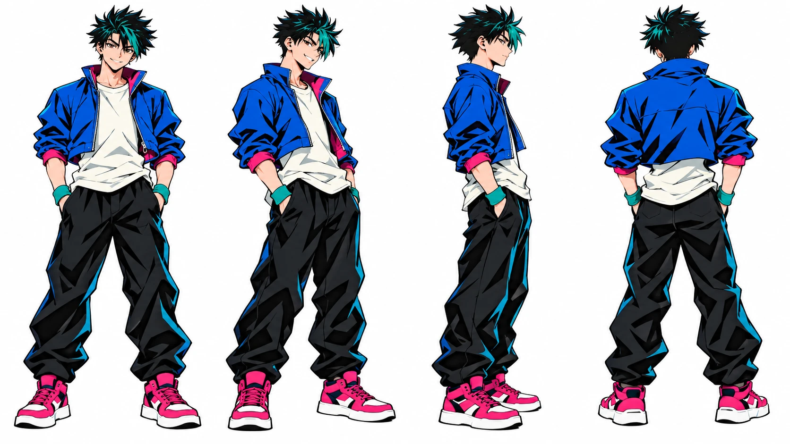
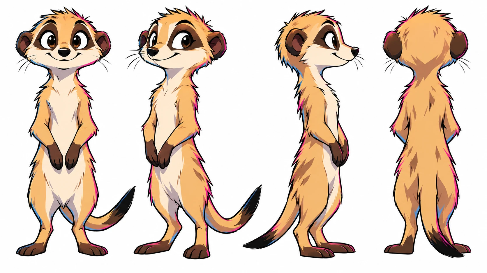
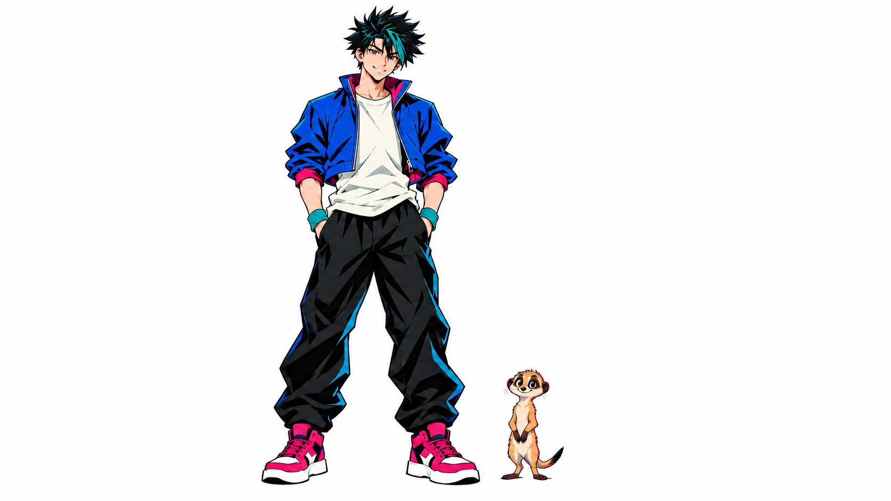
| 段落 | 時間 | 時長 |
|---|---|---|
| 獨立片頭 | 00–05 秒 | 5 秒 |
| 01 同一拍開始 | 05–10 秒 | 5 秒 |
| 02 總慢半個拍 | 10–15 秒 | 5 秒 |
| 03 越急越不同 | 15–20 秒 | 5 秒 |
| 04 先停一拍吧 | 20–25 秒 | 5 秒 |
| 05 聽見小腳步 | 25–30 秒 | 5 秒 |
| 06 用掌心回答 | 30–35 秒 | 5 秒 |
| 07 輪到你再我 | 35–40 秒 | 5 秒 |
| 08 差異變成舞 | 40–45 秒 | 5 秒 |
| 09 讓空間合拍 | 45–50 秒 | 5 秒 |
| 10 我們的節拍 | 50–55 秒 | 5 秒 |
| 獨立片尾 | 55–60 秒 | 5 秒 |
Full shot｜One Beat to Start｜05–10 秒（5 秒）
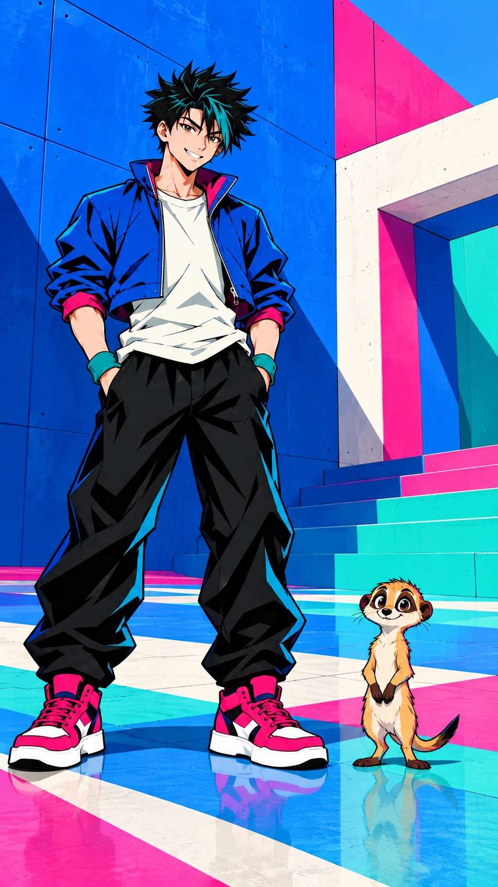
畫面描述｜中文
幾何彩牆廣場，律正面站在左、40公分高狐獴小拍站右，青年雙手準備示範，無其他角色與字。
Frame description｜English
In the geometric color-wall plaza, Ritsu stands left and tiny 40-cm Pip upright right, hands ready to demonstrate; no other characters or text.
Video Caption｜中文
我想我們跳成一樣
Video Caption｜English
I wanted us to move as one.
圖像提示詞｜中文｜9:16
9:16直式，單一動畫分鏡，全景。高彩派對流行漫畫，電藍青綠亮粉黑白、銳利輪廓、平塗硬邊陰影、彈性誇張表情。畫面：幾何彩牆廣場，律正面站在左、40公分高狐獴小拍站右，青年雙手準備示範，無其他角色與字。角色一致性：青年街舞者律，20歲、172公分、約7頭身，黑色短刺髮有一束青綠瀏海、深棕眼；電藍短外套、奶白T恤、黑色寬褲、亮粉白底球鞋、左右各一條青綠護腕，無帽、無手套、無文字圖案。 狐獴小拍，直立高約40公分、四足肩高12公分，沙棕短毛、兩眼各有深棕眼圈、細長尾巴尖為黑色、短圓耳，無衣服；維持小型狐獴比例，不能變成浣熊或長成半人高。角色設定/character_human.png 與角色設定/character_animal.png 固定造型，角色設定/character_scale.png 固定體型。只載入本鏡頭有出現的角色參考，無角色的物件特寫不加入角色。以本鏡頭指定的衣物與道具階段為準；不把完成後的狀態提早出現。不加文字、字幕、標誌、水印、第三個角色；不畫拼貼、分格或角色轉身表。不改臉型、髮型、衣色、動物花紋與比例；不增加肢體或道具。
Image prompt｜English｜9:16
Vertical 9:16, ONE animation storyboard frame, Full shot. STYLE: High-saturation pop comic, electric blue teal bright pink strong black-white contrast, sharp dark contours, clean flat fills, two or three hard-edged cel-shadow levels, angular elastic forms, expressive and playful. FRAME: In the geometric color-wall plaza, Ritsu stands left and tiny 40-cm Pip upright right, hands ready to demonstrate; no other characters or text. CHARACTER LOCK: Ritsu, a 20-year-old male street dancer, 172 cm, seven-head proportions; short spiky black hair with one teal forelock, dark brown eyes. Electric-blue cropped jacket, cream T-shirt, black loose trousers, hot-pink sneakers with white soles, one teal wristband on each wrist, no hat, gloves or lettering. Pip, a meerkat, about 40 cm tall standing upright, shoulder height 12 cm on all fours; sandy short fur, separate dark-brown eye patches, slender tail with black tip, small round ears, no clothing. Natural tiny meerkat proportions, never a raccoon or half-human-height animal. Use character_human.png and character_animal.png for exact designs, character_scale.png for size. Load only the character references visible in this shot; do not add characters to object-only close-ups. The specific shot state takes priority: do not introduce later wardrobe or prop states early. No text, captions, logos, watermarks, extra characters, collage, panels or turnaround. No redesign, scale drift, extra limbs, duplicated props or photographic rendering.
影片提示詞｜中文｜5秒｜9:16
5秒，9:16，以上述分鏡圖為唯一首幀。高彩派對流行漫畫，電藍青綠亮粉黑白、銳利輪廓、平塗硬邊陰影、彈性誇張表情。幾何彩牆廣場，律正面站在左、40公分高狐獴小拍站右，青年雙手準備示範，無其他角色與字。動作與運鏡：輕推近，律示範一次簡單腳尖點地，小拍暫時看著。保持原圖角色、體型、場景位置與道具狀態，運動自然且小幅；最後0.5秒穩定收住。不要切鏡、變形、閃爍、憑空新增物件或生成文字；字幕於剪輯時另疊。
Video prompt｜English｜5 seconds｜9:16
5 seconds, vertical 9:16. Use the matching storyboard image as the sole first frame. High-saturation pop comic, electric blue teal bright pink strong black-white contrast, sharp dark contours, clean flat fills, two or three hard-edged cel-shadow levels, angular elastic forms, expressive and playful. In the geometric color-wall plaza, Ritsu stands left and tiny 40-cm Pip upright right, hands ready to demonstrate; no other characters or text. MOTION AND CAMERA: Gentle push-in as Ritsu demonstrates one simple toe tap while Pip watches. Preserve the supplied designs, body scale, scene geography and prop state; small natural movement, settle for the final 0.5 second. No cuts, morphing, flicker, invented objects or generated text. Add captions during editing.
Low-angle medium close-up｜Half a Beat Behind｜10–15 秒（5 秒）
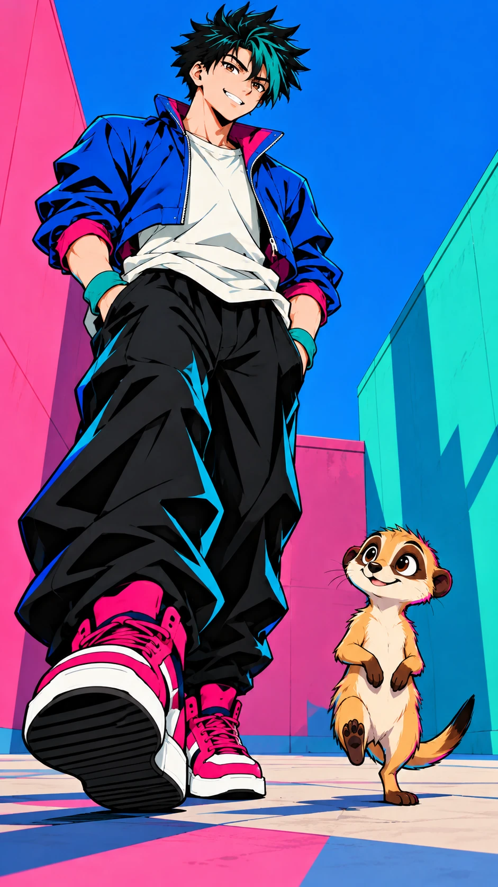
畫面描述｜中文
低機位同框律的亮粉鞋與小拍全身，青年腳尖落地、狐獴另一隻小腳剛抬，錯拍清楚，無擬聲字。
Frame description｜English
Low view frames Ritsu's pink sneakers and all of Pip: the man's toe lands while the meerkat's tiny foot has just lifted, visibly off-beat, no sound-effect lettering.
Video Caption｜中文
你總晚了半個節拍
Video Caption｜English
You arrive half a beat late.
圖像提示詞｜中文｜9:16
9:16直式，單一動畫分鏡，低角近景。高彩派對流行漫畫，電藍青綠亮粉黑白、銳利輪廓、平塗硬邊陰影、彈性誇張表情。畫面：低機位同框律的亮粉鞋與小拍全身，青年腳尖落地、狐獴另一隻小腳剛抬，錯拍清楚，無擬聲字。角色一致性：青年街舞者律，20歲、172公分、約7頭身，黑色短刺髮有一束青綠瀏海、深棕眼；電藍短外套、奶白T恤、黑色寬褲、亮粉白底球鞋、左右各一條青綠護腕，無帽、無手套、無文字圖案。 狐獴小拍，直立高約40公分、四足肩高12公分，沙棕短毛、兩眼各有深棕眼圈、細長尾巴尖為黑色、短圓耳，無衣服；維持小型狐獴比例，不能變成浣熊或長成半人高。角色設定/character_human.png 與角色設定/character_animal.png 固定造型，角色設定/character_scale.png 固定體型。只載入本鏡頭有出現的角色參考，無角色的物件特寫不加入角色。以本鏡頭指定的衣物與道具階段為準；不把完成後的狀態提早出現。不加文字、字幕、標誌、水印、第三個角色；不畫拼貼、分格或角色轉身表。不改臉型、髮型、衣色、動物花紋與比例；不增加肢體或道具。
Image prompt｜English｜9:16
Vertical 9:16, ONE animation storyboard frame, Low-angle medium close-up. STYLE: High-saturation pop comic, electric blue teal bright pink strong black-white contrast, sharp dark contours, clean flat fills, two or three hard-edged cel-shadow levels, angular elastic forms, expressive and playful. FRAME: Low view frames Ritsu's pink sneakers and all of Pip: the man's toe lands while the meerkat's tiny foot has just lifted, visibly off-beat, no sound-effect lettering. CHARACTER LOCK: Ritsu, a 20-year-old male street dancer, 172 cm, seven-head proportions; short spiky black hair with one teal forelock, dark brown eyes. Electric-blue cropped jacket, cream T-shirt, black loose trousers, hot-pink sneakers with white soles, one teal wristband on each wrist, no hat, gloves or lettering. Pip, a meerkat, about 40 cm tall standing upright, shoulder height 12 cm on all fours; sandy short fur, separate dark-brown eye patches, slender tail with black tip, small round ears, no clothing. Natural tiny meerkat proportions, never a raccoon or half-human-height animal. Use character_human.png and character_animal.png for exact designs, character_scale.png for size. Load only the character references visible in this shot; do not add characters to object-only close-ups. The specific shot state takes priority: do not introduce later wardrobe or prop states early. No text, captions, logos, watermarks, extra characters, collage, panels or turnaround. No redesign, scale drift, extra limbs, duplicated props or photographic rendering.
影片提示詞｜中文｜5秒｜9:16
5秒，9:16，以上述分鏡圖為唯一首幀。高彩派對流行漫畫，電藍青綠亮粉黑白、銳利輪廓、平塗硬邊陰影、彈性誇張表情。低機位同框律的亮粉鞋與小拍全身，青年腳尖落地、狐獴另一隻小腳剛抬，錯拍清楚，無擬聲字。動作與運鏡：固定鏡位，青年先點一下，小拍晚半秒點一下，動作很小。保持原圖角色、體型、場景位置與道具狀態，運動自然且小幅；最後0.5秒穩定收住。不要切鏡、變形、閃爍、憑空新增物件或生成文字；字幕於剪輯時另疊。
Video prompt｜English｜5 seconds｜9:16
5 seconds, vertical 9:16. Use the matching storyboard image as the sole first frame. High-saturation pop comic, electric blue teal bright pink strong black-white contrast, sharp dark contours, clean flat fills, two or three hard-edged cel-shadow levels, angular elastic forms, expressive and playful. Low view frames Ritsu's pink sneakers and all of Pip: the man's toe lands while the meerkat's tiny foot has just lifted, visibly off-beat, no sound-effect lettering. MOTION AND CAMERA: Locked shot: the man taps once, Pip follows half a second later with a tiny tap. Preserve the supplied designs, body scale, scene geography and prop state; small natural movement, settle for the final 0.5 second. No cuts, morphing, flicker, invented objects or generated text. Add captions during editing.
2026-10-24 修正：畫面左側的手重繪為一根拇指、四根手指的自然五指手掌，為使指數清晰而略微張開手勢；其餘角色與構圖保留。同步更新中英文圖像、影片提示詞。
Medium close-up｜Trying Too Hard｜15–20 秒（5 秒）
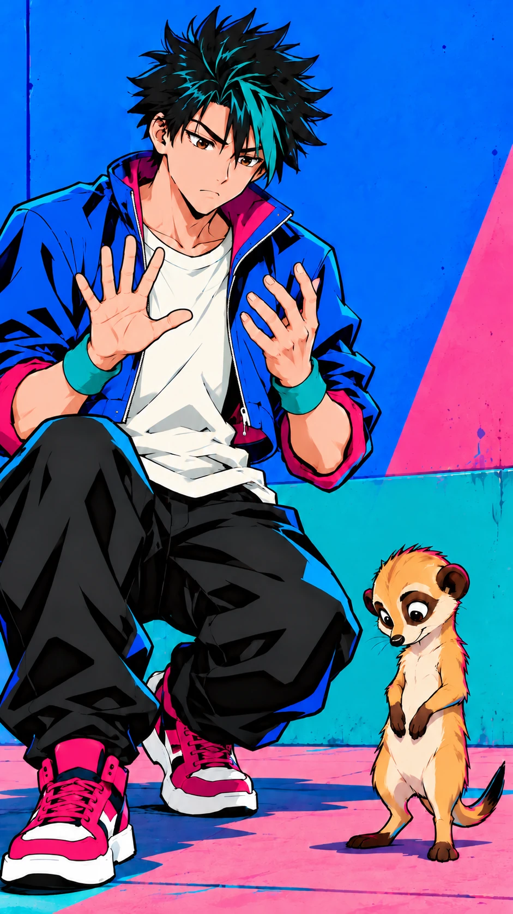
畫面描述｜中文
律眉頭微皺、雙手停在胸前準備數拍但無數字符號，小拍低頭看腳，後方彩牆固定。
Frame description｜English
Ritsu frowns slightly, hands paused at chest height as if counting with no number graphics; Pip looks down at its feet, fixed color wall behind.
Video Caption｜中文
越想整齊越聽不見
Video Caption｜English
Trying harder, hearing less.
圖像提示詞｜中文｜9:16
9:16直式，單一動畫分鏡，近景。高彩派對流行漫畫，電藍青綠亮粉黑白、銳利輪廓、平塗硬邊陰影、彈性誇張表情。畫面：律眉頭微皺、雙手停在胸前準備數拍但無數字符號，小拍低頭看腳，後方彩牆固定。角色一致性：青年街舞者律，20歲、172公分、約7頭身，黑色短刺髮有一束青綠瀏海、深棕眼；電藍短外套、奶白T恤、黑色寬褲、亮粉白底球鞋、左右各一條青綠護腕，無帽、無手套、無文字圖案。 狐獴小拍，直立高約40公分、四足肩高12公分，沙棕短毛、兩眼各有深棕眼圈、細長尾巴尖為黑色、短圓耳，無衣服；維持小型狐獴比例，不能變成浣熊或長成半人高。角色設定/character_human.png 與角色設定/character_animal.png 固定造型，角色設定/character_scale.png 固定體型。只載入本鏡頭有出現的角色參考，無角色的物件特寫不加入角色。以本鏡頭指定的衣物與道具階段為準；不把完成後的狀態提早出現。不加文字、字幕、標誌、水印、第三個角色；不畫拼貼、分格或角色轉身表。不改臉型、髮型、衣色、動物花紋與比例；不增加肢體或道具。 畫面左側的手（角色右手）為清楚自然的五指手掌，一根拇指與四根手指，手指略張開，掌指、關節及手腕連接合理；不出現第六根手指、重複拇指或多餘指尖。
Image prompt｜English｜9:16
Vertical 9:16, ONE animation storyboard frame, Medium close-up. STYLE: High-saturation pop comic, electric blue teal bright pink strong black-white contrast, sharp dark contours, clean flat fills, two or three hard-edged cel-shadow levels, angular elastic forms, expressive and playful. FRAME: Ritsu frowns slightly, hands paused at chest height as if counting with no number graphics; Pip looks down at its feet, fixed color wall behind. CHARACTER LOCK: Ritsu, a 20-year-old male street dancer, 172 cm, seven-head proportions; short spiky black hair with one teal forelock, dark brown eyes. Electric-blue cropped jacket, cream T-shirt, black loose trousers, hot-pink sneakers with white soles, one teal wristband on each wrist, no hat, gloves or lettering. Pip, a meerkat, about 40 cm tall standing upright, shoulder height 12 cm on all fours; sandy short fur, separate dark-brown eye patches, slender tail with black tip, small round ears, no clothing. Natural tiny meerkat proportions, never a raccoon or half-human-height animal. Use character_human.png and character_animal.png for exact designs, character_scale.png for size. Load only the character references visible in this shot; do not add characters to object-only close-ups. The specific shot state takes priority: do not introduce later wardrobe or prop states early. No text, captions, logos, watermarks, extra characters, collage, panels or turnaround. No redesign, scale drift, extra limbs, duplicated props or photographic rendering. The hand on the VIEWER LEFT (his anatomical RIGHT) is a clear natural five-digit hand: ONE thumb and FOUR fingers, gently spread, with coherent knuckles and wrist connection. No sixth finger, duplicate thumb or extra fingertip.
影片提示詞｜中文｜5秒｜9:16
5秒，9:16，以上述分鏡圖為唯一首幀。高彩派對流行漫畫，電藍青綠亮粉黑白、銳利輪廓、平塗硬邊陰影、彈性誇張表情。律眉頭微皺、雙手停在胸前準備數拍但無數字符號，小拍低頭看腳，後方彩牆固定。動作與運鏡：緩推近，律想抬手又停住，小拍不安地縮一下肩，無大幅跳躍。保持原圖角色、體型、場景位置與道具狀態，運動自然且小幅；最後0.5秒穩定收住。不要切鏡、變形、閃爍、憑空新增物件或生成文字；字幕於剪輯時另疊。 以五指修正版 shot_03.png 為首幀，維持左側手掌一根拇指與四根手指的正常結構，不增生、分裂或黏連手指，手腕自然連接。
Video prompt｜English｜5 seconds｜9:16
5 seconds, vertical 9:16. Use the matching storyboard image as the sole first frame. High-saturation pop comic, electric blue teal bright pink strong black-white contrast, sharp dark contours, clean flat fills, two or three hard-edged cel-shadow levels, angular elastic forms, expressive and playful. Ritsu frowns slightly, hands paused at chest height as if counting with no number graphics; Pip looks down at its feet, fixed color wall behind. MOTION AND CAMERA: Slow push-in as he starts to raise a hand then stops; Pip gives a tiny uncertain shoulder tuck, no big leap. Preserve the supplied designs, body scale, scene geography and prop state; small natural movement, settle for the final 0.5 second. No cuts, morphing, flicker, invented objects or generated text. Add captions during editing. Use the corrected five-digit shot_03.png as first frame. Preserve ONE thumb and FOUR fingers on the viewer-left hand, with a natural wrist connection; no added, split or fused digits.
Medium shot｜One Beat of Stillness｜20–25 秒（5 秒）
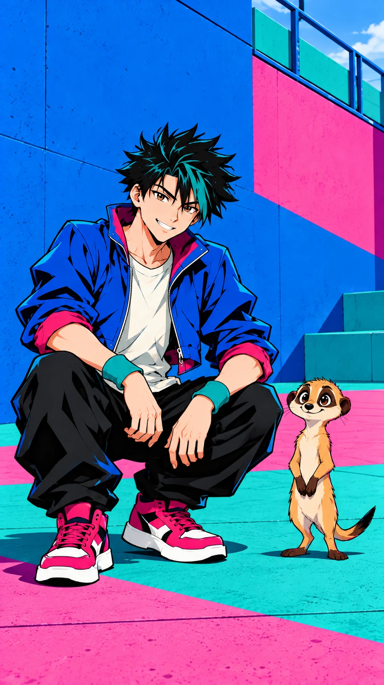
畫面描述｜中文
律蹲在小拍旁但留空間，雙掌放膝，神情放鬆；狐獴站穩，周圍圖形稀疏，無動態線。
Frame description｜English
Ritsu crouches beside Pip with space between them, palms on knees, expression relaxed; the meerkat stands steady, sparse graphics and no speed lines.
Video Caption｜中文
先把我的聲音放低
Video Caption｜English
Let my own beat soften.
圖像提示詞｜中文｜9:16
9:16直式，單一動畫分鏡，中景。高彩派對流行漫畫，電藍青綠亮粉黑白、銳利輪廓、平塗硬邊陰影、彈性誇張表情。畫面：律蹲在小拍旁但留空間，雙掌放膝，神情放鬆；狐獴站穩，周圍圖形稀疏，無動態線。角色一致性：青年街舞者律，20歲、172公分、約7頭身，黑色短刺髮有一束青綠瀏海、深棕眼；電藍短外套、奶白T恤、黑色寬褲、亮粉白底球鞋、左右各一條青綠護腕，無帽、無手套、無文字圖案。 狐獴小拍，直立高約40公分、四足肩高12公分，沙棕短毛、兩眼各有深棕眼圈、細長尾巴尖為黑色、短圓耳，無衣服；維持小型狐獴比例，不能變成浣熊或長成半人高。角色設定/character_human.png 與角色設定/character_animal.png 固定造型，角色設定/character_scale.png 固定體型。只載入本鏡頭有出現的角色參考，無角色的物件特寫不加入角色。以本鏡頭指定的衣物與道具階段為準；不把完成後的狀態提早出現。不加文字、字幕、標誌、水印、第三個角色；不畫拼貼、分格或角色轉身表。不改臉型、髮型、衣色、動物花紋與比例；不增加肢體或道具。
Image prompt｜English｜9:16
Vertical 9:16, ONE animation storyboard frame, Medium shot. STYLE: High-saturation pop comic, electric blue teal bright pink strong black-white contrast, sharp dark contours, clean flat fills, two or three hard-edged cel-shadow levels, angular elastic forms, expressive and playful. FRAME: Ritsu crouches beside Pip with space between them, palms on knees, expression relaxed; the meerkat stands steady, sparse graphics and no speed lines. CHARACTER LOCK: Ritsu, a 20-year-old male street dancer, 172 cm, seven-head proportions; short spiky black hair with one teal forelock, dark brown eyes. Electric-blue cropped jacket, cream T-shirt, black loose trousers, hot-pink sneakers with white soles, one teal wristband on each wrist, no hat, gloves or lettering. Pip, a meerkat, about 40 cm tall standing upright, shoulder height 12 cm on all fours; sandy short fur, separate dark-brown eye patches, slender tail with black tip, small round ears, no clothing. Natural tiny meerkat proportions, never a raccoon or half-human-height animal. Use character_human.png and character_animal.png for exact designs, character_scale.png for size. Load only the character references visible in this shot; do not add characters to object-only close-ups. The specific shot state takes priority: do not introduce later wardrobe or prop states early. No text, captions, logos, watermarks, extra characters, collage, panels or turnaround. No redesign, scale drift, extra limbs, duplicated props or photographic rendering.
影片提示詞｜中文｜5秒｜9:16
5秒，9:16，以上述分鏡圖為唯一首幀。高彩派對流行漫畫，電藍青綠亮粉黑白、銳利輪廓、平塗硬邊陰影、彈性誇張表情。律蹲在小拍旁但留空間，雙掌放膝，神情放鬆；狐獴站穩，周圍圖形稀疏，無動態線。動作與運鏡：固定鏡位，青年慢呼氣並安靜看著小拍，讓停頓成立。保持原圖角色、體型、場景位置與道具狀態，運動自然且小幅；最後0.5秒穩定收住。不要切鏡、變形、閃爍、憑空新增物件或生成文字；字幕於剪輯時另疊。
Video prompt｜English｜5 seconds｜9:16
5 seconds, vertical 9:16. Use the matching storyboard image as the sole first frame. High-saturation pop comic, electric blue teal bright pink strong black-white contrast, sharp dark contours, clean flat fills, two or three hard-edged cel-shadow levels, angular elastic forms, expressive and playful. Ritsu crouches beside Pip with space between them, palms on knees, expression relaxed; the meerkat stands steady, sparse graphics and no speed lines. MOTION AND CAMERA: Locked shot: he exhales slowly and quietly watches Pip; hold a real pause. Preserve the supplied designs, body scale, scene geography and prop state; small natural movement, settle for the final 0.5 second. No cuts, morphing, flicker, invented objects or generated text. Add captions during editing.
Close-up｜A Tiny Rhythm｜25–30 秒（5 秒）
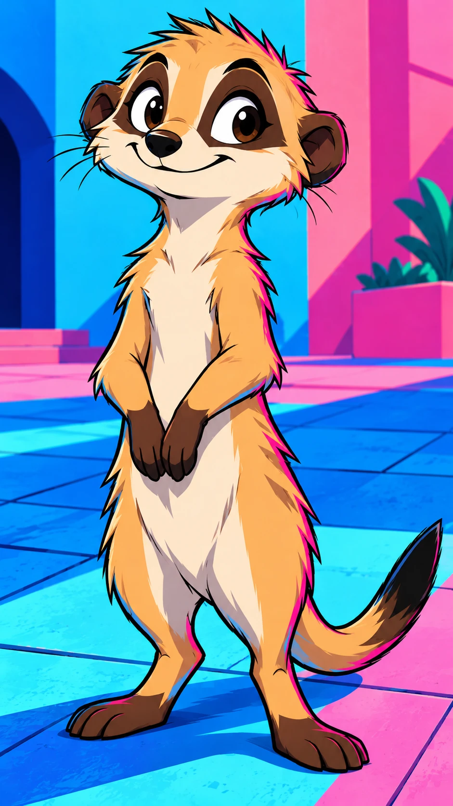
畫面描述｜中文
狐獴小拍全身近景在地坪，沙棕毛與黑尾尖、兩深眼圈清楚，前爪貼胸，兩小腳有自己的輕點節奏。
Frame description｜English
Full-body close view of Pip on the plaza floor, sandy coat, black tail tip and two dark eye patches clear; forepaws at chest and tiny feet ready for their own rhythm.
Video Caption｜中文
你的腳步原來有歌
Video Caption｜English
Your little steps have a song.
圖像提示詞｜中文｜9:16
9:16直式，單一動畫分鏡，特寫。高彩派對流行漫畫，電藍青綠亮粉黑白、銳利輪廓、平塗硬邊陰影、彈性誇張表情。畫面：狐獴小拍全身近景在地坪，沙棕毛與黑尾尖、兩深眼圈清楚，前爪貼胸，兩小腳有自己的輕點節奏。角色一致性：狐獴小拍，直立高約40公分、四足肩高12公分，沙棕短毛、兩眼各有深棕眼圈、細長尾巴尖為黑色、短圓耳，無衣服；維持小型狐獴比例，不能變成浣熊或長成半人高。角色設定/character_human.png 與角色設定/character_animal.png 固定造型，角色設定/character_scale.png 固定體型。只載入本鏡頭有出現的角色參考，無角色的物件特寫不加入角色。以本鏡頭指定的衣物與道具階段為準；不把完成後的狀態提早出現。不加文字、字幕、標誌、水印、第三個角色；不畫拼貼、分格或角色轉身表。不改臉型、髮型、衣色、動物花紋與比例；不增加肢體或道具。
Image prompt｜English｜9:16
Vertical 9:16, ONE animation storyboard frame, Close-up. STYLE: High-saturation pop comic, electric blue teal bright pink strong black-white contrast, sharp dark contours, clean flat fills, two or three hard-edged cel-shadow levels, angular elastic forms, expressive and playful. FRAME: Full-body close view of Pip on the plaza floor, sandy coat, black tail tip and two dark eye patches clear; forepaws at chest and tiny feet ready for their own rhythm. CHARACTER LOCK: Pip, a meerkat, about 40 cm tall standing upright, shoulder height 12 cm on all fours; sandy short fur, separate dark-brown eye patches, slender tail with black tip, small round ears, no clothing. Natural tiny meerkat proportions, never a raccoon or half-human-height animal. Use character_human.png and character_animal.png for exact designs, character_scale.png for size. Load only the character references visible in this shot; do not add characters to object-only close-ups. The specific shot state takes priority: do not introduce later wardrobe or prop states early. No text, captions, logos, watermarks, extra characters, collage, panels or turnaround. No redesign, scale drift, extra limbs, duplicated props or photographic rendering.
影片提示詞｜中文｜5秒｜9:16
5秒，9:16，以上述分鏡圖為唯一首幀。高彩派對流行漫畫，電藍青綠亮粉黑白、銳利輪廓、平塗硬邊陰影、彈性誇張表情。狐獴小拍全身近景在地坪，沙棕毛與黑尾尖、兩深眼圈清楚，前爪貼胸，兩小腳有自己的輕點節奏。動作與運鏡：固定低位，小拍右腳做兩次很輕的點地、停一下，維持正常腳掌與尾巴。保持原圖角色、體型、場景位置與道具狀態，運動自然且小幅；最後0.5秒穩定收住。不要切鏡、變形、閃爍、憑空新增物件或生成文字；字幕於剪輯時另疊。
Video prompt｜English｜5 seconds｜9:16
5 seconds, vertical 9:16. Use the matching storyboard image as the sole first frame. High-saturation pop comic, electric blue teal bright pink strong black-white contrast, sharp dark contours, clean flat fills, two or three hard-edged cel-shadow levels, angular elastic forms, expressive and playful. Full-body close view of Pip on the plaza floor, sandy coat, black tail tip and two dark eye patches clear; forepaws at chest and tiny feet ready for their own rhythm. MOTION AND CAMERA: Locked low shot: Pip taps its right foot lightly twice, then pauses; paws and tail retain natural anatomy. Preserve the supplied designs, body scale, scene geography and prop state; small natural movement, settle for the final 0.5 second. No cuts, morphing, flicker, invented objects or generated text. Add captions during editing.
Medium close-up｜An Answer in Hands｜30–35 秒（5 秒）
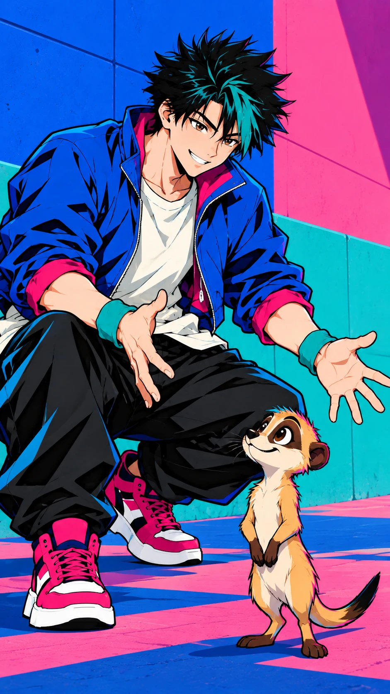
畫面描述｜中文
律仍蹲著，雙手分開準備回應狐獴的拍子，眼神帶笑；小拍在畫面下側抬頭。
Frame description｜English
Still crouched, Ritsu holds his hands apart to answer Pip's rhythm, smiling with his eyes; Pip looks up from the lower frame.
Video Caption｜中文
我用掌心輕輕回答
Video Caption｜English
My hands answer softly.
圖像提示詞｜中文｜9:16
9:16直式，單一動畫分鏡，近景。高彩派對流行漫畫，電藍青綠亮粉黑白、銳利輪廓、平塗硬邊陰影、彈性誇張表情。畫面：律仍蹲著，雙手分開準備回應狐獴的拍子，眼神帶笑；小拍在畫面下側抬頭。角色一致性：青年街舞者律，20歲、172公分、約7頭身，黑色短刺髮有一束青綠瀏海、深棕眼；電藍短外套、奶白T恤、黑色寬褲、亮粉白底球鞋、左右各一條青綠護腕，無帽、無手套、無文字圖案。 狐獴小拍，直立高約40公分、四足肩高12公分，沙棕短毛、兩眼各有深棕眼圈、細長尾巴尖為黑色、短圓耳，無衣服；維持小型狐獴比例，不能變成浣熊或長成半人高。角色設定/character_human.png 與角色設定/character_animal.png 固定造型，角色設定/character_scale.png 固定體型。只載入本鏡頭有出現的角色參考，無角色的物件特寫不加入角色。以本鏡頭指定的衣物與道具階段為準；不把完成後的狀態提早出現。不加文字、字幕、標誌、水印、第三個角色；不畫拼貼、分格或角色轉身表。不改臉型、髮型、衣色、動物花紋與比例；不增加肢體或道具。
Image prompt｜English｜9:16
Vertical 9:16, ONE animation storyboard frame, Medium close-up. STYLE: High-saturation pop comic, electric blue teal bright pink strong black-white contrast, sharp dark contours, clean flat fills, two or three hard-edged cel-shadow levels, angular elastic forms, expressive and playful. FRAME: Still crouched, Ritsu holds his hands apart to answer Pip's rhythm, smiling with his eyes; Pip looks up from the lower frame. CHARACTER LOCK: Ritsu, a 20-year-old male street dancer, 172 cm, seven-head proportions; short spiky black hair with one teal forelock, dark brown eyes. Electric-blue cropped jacket, cream T-shirt, black loose trousers, hot-pink sneakers with white soles, one teal wristband on each wrist, no hat, gloves or lettering. Pip, a meerkat, about 40 cm tall standing upright, shoulder height 12 cm on all fours; sandy short fur, separate dark-brown eye patches, slender tail with black tip, small round ears, no clothing. Natural tiny meerkat proportions, never a raccoon or half-human-height animal. Use character_human.png and character_animal.png for exact designs, character_scale.png for size. Load only the character references visible in this shot; do not add characters to object-only close-ups. The specific shot state takes priority: do not introduce later wardrobe or prop states early. No text, captions, logos, watermarks, extra characters, collage, panels or turnaround. No redesign, scale drift, extra limbs, duplicated props or photographic rendering.
影片提示詞｜中文｜5秒｜9:16
5秒，9:16，以上述分鏡圖為唯一首幀。高彩派對流行漫畫，電藍青綠亮粉黑白、銳利輪廓、平塗硬邊陰影、彈性誇張表情。律仍蹲著，雙手分開準備回應狐獴的拍子，眼神帶笑；小拍在畫面下側抬頭。動作與運鏡：緩推近，青年只做一次輕拍手並分開，十指清楚，不出現額外手。保持原圖角色、體型、場景位置與道具狀態，運動自然且小幅；最後0.5秒穩定收住。不要切鏡、變形、閃爍、憑空新增物件或生成文字；字幕於剪輯時另疊。
Video prompt｜English｜5 seconds｜9:16
5 seconds, vertical 9:16. Use the matching storyboard image as the sole first frame. High-saturation pop comic, electric blue teal bright pink strong black-white contrast, sharp dark contours, clean flat fills, two or three hard-edged cel-shadow levels, angular elastic forms, expressive and playful. Still crouched, Ritsu holds his hands apart to answer Pip's rhythm, smiling with his eyes; Pip looks up from the lower frame. MOTION AND CAMERA: Slow push-in: one soft clap and release, fingers readable, no extra hands. Preserve the supplied designs, body scale, scene geography and prop state; small natural movement, settle for the final 0.5 second. No cuts, morphing, flicker, invented objects or generated text. Add captions during editing.
Medium shot｜Your Turn, Then Mine｜35–40 秒（5 秒）
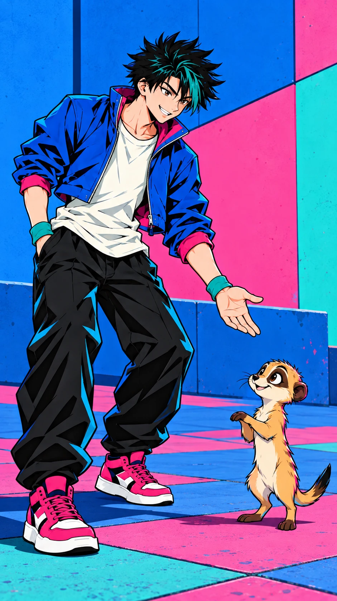
畫面描述｜中文
律站起但微俯身，左掌開向小拍示意輪替，狐獴前爪輕抬，兩者間有乾淨空白。
Frame description｜English
Ritsu stands with a slight forward lean, left palm open toward Pip to invite a turn; the meerkat raises its forepaws slightly, clean space between them.
Video Caption｜中文
輪到你也輪到我了
Video Caption｜English
Your turn, then mine.
圖像提示詞｜中文｜9:16
9:16直式，單一動畫分鏡，中景。高彩派對流行漫畫，電藍青綠亮粉黑白、銳利輪廓、平塗硬邊陰影、彈性誇張表情。畫面：律站起但微俯身，左掌開向小拍示意輪替，狐獴前爪輕抬，兩者間有乾淨空白。角色一致性：青年街舞者律，20歲、172公分、約7頭身，黑色短刺髮有一束青綠瀏海、深棕眼；電藍短外套、奶白T恤、黑色寬褲、亮粉白底球鞋、左右各一條青綠護腕，無帽、無手套、無文字圖案。 狐獴小拍，直立高約40公分、四足肩高12公分，沙棕短毛、兩眼各有深棕眼圈、細長尾巴尖為黑色、短圓耳，無衣服；維持小型狐獴比例，不能變成浣熊或長成半人高。角色設定/character_human.png 與角色設定/character_animal.png 固定造型，角色設定/character_scale.png 固定體型。只載入本鏡頭有出現的角色參考，無角色的物件特寫不加入角色。以本鏡頭指定的衣物與道具階段為準；不把完成後的狀態提早出現。不加文字、字幕、標誌、水印、第三個角色；不畫拼貼、分格或角色轉身表。不改臉型、髮型、衣色、動物花紋與比例；不增加肢體或道具。
Image prompt｜English｜9:16
Vertical 9:16, ONE animation storyboard frame, Medium shot. STYLE: High-saturation pop comic, electric blue teal bright pink strong black-white contrast, sharp dark contours, clean flat fills, two or three hard-edged cel-shadow levels, angular elastic forms, expressive and playful. FRAME: Ritsu stands with a slight forward lean, left palm open toward Pip to invite a turn; the meerkat raises its forepaws slightly, clean space between them. CHARACTER LOCK: Ritsu, a 20-year-old male street dancer, 172 cm, seven-head proportions; short spiky black hair with one teal forelock, dark brown eyes. Electric-blue cropped jacket, cream T-shirt, black loose trousers, hot-pink sneakers with white soles, one teal wristband on each wrist, no hat, gloves or lettering. Pip, a meerkat, about 40 cm tall standing upright, shoulder height 12 cm on all fours; sandy short fur, separate dark-brown eye patches, slender tail with black tip, small round ears, no clothing. Natural tiny meerkat proportions, never a raccoon or half-human-height animal. Use character_human.png and character_animal.png for exact designs, character_scale.png for size. Load only the character references visible in this shot; do not add characters to object-only close-ups. The specific shot state takes priority: do not introduce later wardrobe or prop states early. No text, captions, logos, watermarks, extra characters, collage, panels or turnaround. No redesign, scale drift, extra limbs, duplicated props or photographic rendering.
影片提示詞｜中文｜5秒｜9:16
5秒，9:16，以上述分鏡圖為唯一首幀。高彩派對流行漫畫，電藍青綠亮粉黑白、銳利輪廓、平塗硬邊陰影、彈性誇張表情。律站起但微俯身，左掌開向小拍示意輪替，狐獴前爪輕抬，兩者間有乾淨空白。動作與運鏡：固定鏡位，小拍點一步、青年回一個點頭，依序動作，不同步大跳。保持原圖角色、體型、場景位置與道具狀態，運動自然且小幅；最後0.5秒穩定收住。不要切鏡、變形、閃爍、憑空新增物件或生成文字；字幕於剪輯時另疊。
Video prompt｜English｜5 seconds｜9:16
5 seconds, vertical 9:16. Use the matching storyboard image as the sole first frame. High-saturation pop comic, electric blue teal bright pink strong black-white contrast, sharp dark contours, clean flat fills, two or three hard-edged cel-shadow levels, angular elastic forms, expressive and playful. Ritsu stands with a slight forward lean, left palm open toward Pip to invite a turn; the meerkat raises its forepaws slightly, clean space between them. MOTION AND CAMERA: Locked shot: Pip makes one tap, then Ritsu answers with a nod; sequential actions, no synchronized big jumps. Preserve the supplied designs, body scale, scene geography and prop state; small natural movement, settle for the final 0.5 second. No cuts, morphing, flicker, invented objects or generated text. Add captions during editing.
2026-10-24 修正：清除男人腳邊與狐獴兩側的青綠、粉色弧形動態線，保留服裝輪廓光、狐獴尾巴與地面陰影；刪除原描述中要求弧線點綴的內容，同步更新中英文圖像及影片提示詞。
Full shot｜Difference Becomes Dance｜40–45 秒（5 秒）
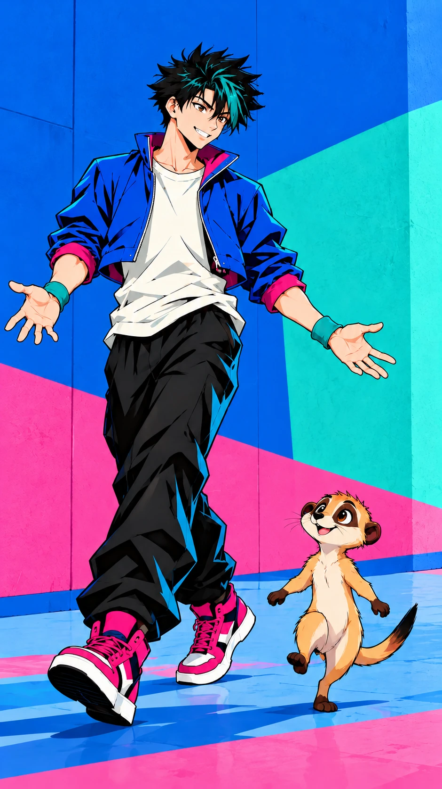
畫面描述｜中文
律輕側移一腳、手掌打開，小拍在旁以細小步幅回應；背景保留電藍青綠粉色幾何色塊，人物腳邊與狐獴兩側沒有動態弧線，狐獴高度只到小腿。
Frame description｜English
Ritsu makes a small side step with open palms, Pip answering in tiny steps beside him. Keep the electric-blue, teal and pink geometric background, with no motion arcs around the man feet or either side of the meerkat; Pip remains only shin-high.
Video Caption｜中文
不一樣也能跳成舞
Video Caption｜English
Different steps make a dance.
圖像提示詞｜中文｜9:16
9:16直式，單一動畫分鏡，全景。高彩派對流行漫畫，電藍青綠亮粉黑白、銳利輪廓、平塗硬邊陰影、彈性誇張表情。畫面：律輕側移一腳、手掌打開，小拍在旁以細小步幅回應；背景保留電藍青綠粉色幾何色塊，人物腳邊與狐獴兩側沒有動態弧線，狐獴高度只到小腿。角色一致性：青年街舞者律，20歲、172公分、約7頭身，黑色短刺髮有一束青綠瀏海、深棕眼；電藍短外套、奶白T恤、黑色寬褲、亮粉白底球鞋、左右各一條青綠護腕，無帽、無手套、無文字圖案。 狐獴小拍，直立高約40公分、四足肩高12公分，沙棕短毛、兩眼各有深棕眼圈、細長尾巴尖為黑色、短圓耳，無衣服；維持小型狐獴比例，不能變成浣熊或長成半人高。角色設定/character_human.png 與角色設定/character_animal.png 固定造型，角色設定/character_scale.png 固定體型。只載入本鏡頭有出現的角色參考，無角色的物件特寫不加入角色。以本鏡頭指定的衣物與道具階段為準；不把完成後的狀態提早出現。不加文字、字幕、標誌、水印、第三個角色；不畫拼貼、分格或角色轉身表。不改臉型、髮型、衣色、動物花紋與比例；不增加肢體或道具。 不畫彩色弧形動態線、飄帶狀速度線、殘影或漫畫動作符號；保留人物衣褲的真實輪廓光、狐獴尾巴與鬍鬚、正常投影及幾何背景。
Image prompt｜English｜9:16
Vertical 9:16, ONE animation storyboard frame, Full shot. STYLE: High-saturation pop comic, electric blue teal bright pink strong black-white contrast, sharp dark contours, clean flat fills, two or three hard-edged cel-shadow levels, angular elastic forms, expressive and playful. FRAME: Ritsu makes a small side step with open palms, Pip answering in tiny steps beside him. Keep the electric-blue, teal and pink geometric background, with no motion arcs around the man feet or either side of the meerkat; Pip remains only shin-high. CHARACTER LOCK: Ritsu, a 20-year-old male street dancer, 172 cm, seven-head proportions; short spiky black hair with one teal forelock, dark brown eyes. Electric-blue cropped jacket, cream T-shirt, black loose trousers, hot-pink sneakers with white soles, one teal wristband on each wrist, no hat, gloves or lettering. Pip, a meerkat, about 40 cm tall standing upright, shoulder height 12 cm on all fours; sandy short fur, separate dark-brown eye patches, slender tail with black tip, small round ears, no clothing. Natural tiny meerkat proportions, never a raccoon or half-human-height animal. Use character_human.png and character_animal.png for exact designs, character_scale.png for size. Load only the character references visible in this shot; do not add characters to object-only close-ups. The specific shot state takes priority: do not introduce later wardrobe or prop states early. No text, captions, logos, watermarks, extra characters, collage, panels or turnaround. No redesign, scale drift, extra limbs, duplicated props or photographic rendering. No colored curved motion arcs, ribbon-like speed lines, trails or comic movement symbols. Preserve the actual clothing rim highlights, meerkat tail and whiskers, natural cast shadows and geometric background.
影片提示詞｜中文｜5秒｜9:16
5秒，9:16，以上述分鏡圖為唯一首幀。高彩派對流行漫畫，電藍青綠亮粉黑白、銳利輪廓、平塗硬邊陰影、彈性誇張表情。律輕側移一腳、手掌打開，小拍在旁以細小步幅回應；背景保留電藍青綠粉色幾何色塊，人物腳邊與狐獴兩側沒有動態弧線，狐獴高度只到小腿。動作與運鏡：緩橫移，青年側點一步後停，小拍回一步，保持先後與身高差。保持原圖角色、體型、場景位置與道具狀態，運動自然且小幅；最後0.5秒穩定收住。不要切鏡、變形、閃爍、憑空新增物件或生成文字；字幕於剪輯時另疊。 動作僅以人物與狐獴的自然位移呈現。不畫彩色弧形動態線、飄帶狀速度線、殘影或漫畫動作符號；保留人物衣褲的真實輪廓光、狐獴尾巴與鬍鬚、正常投影及幾何背景。
Video prompt｜English｜5 seconds｜9:16
5 seconds, vertical 9:16. Use the matching storyboard image as the sole first frame. High-saturation pop comic, electric blue teal bright pink strong black-white contrast, sharp dark contours, clean flat fills, two or three hard-edged cel-shadow levels, angular elastic forms, expressive and playful. Ritsu makes a small side step with open palms, Pip answering in tiny steps beside him. Keep the electric-blue, teal and pink geometric background, with no motion arcs around the man feet or either side of the meerkat; Pip remains only shin-high. MOTION AND CAMERA: Slow lateral drift: the man side-taps and pauses, then Pip answers one step; preserve sequence and scale. Preserve the supplied designs, body scale, scene geography and prop state; small natural movement, settle for the final 0.5 second. No cuts, morphing, flicker, invented objects or generated text. Add captions during editing. Convey movement only through natural physical motion of the man and meerkat. No colored curved motion arcs, ribbon-like speed lines, trails or comic movement symbols. Preserve the actual clothing rim highlights, meerkat tail and whiskers, natural cast shadows and geometric background.
High-angle full shot｜Room for Two Beats｜45–50 秒（5 秒）
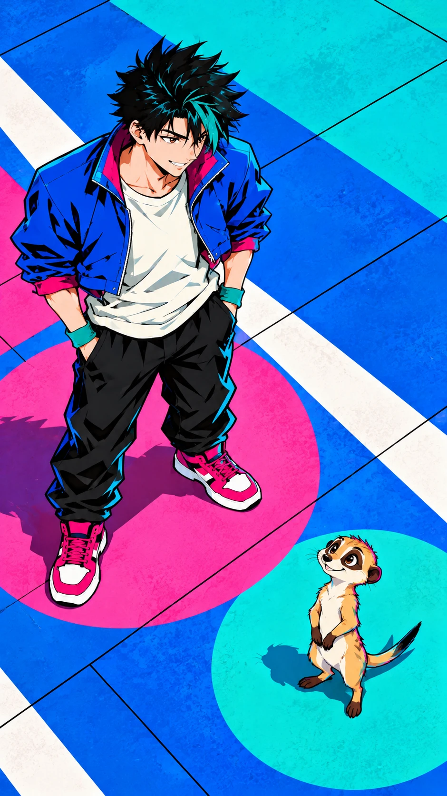
畫面描述｜中文
俯視廣場幾何地坪，律與小拍分立兩個相距不遠的圓形色塊，彼此朝向對方，沒有任何字與觀眾。
Frame description｜English
High angle over the geometric plaza floor: Ritsu and Pip occupy two nearby circular color patches, facing one another; no lettering or audience.
Video Caption｜中文
留一點空給彼此吧
Video Caption｜English
Leave a little room for each other.
圖像提示詞｜中文｜9:16
9:16直式，單一動畫分鏡，俯拍全景。高彩派對流行漫畫，電藍青綠亮粉黑白、銳利輪廓、平塗硬邊陰影、彈性誇張表情。畫面：俯視廣場幾何地坪，律與小拍分立兩個相距不遠的圓形色塊，彼此朝向對方，沒有任何字與觀眾。角色一致性：青年街舞者律，20歲、172公分、約7頭身，黑色短刺髮有一束青綠瀏海、深棕眼；電藍短外套、奶白T恤、黑色寬褲、亮粉白底球鞋、左右各一條青綠護腕，無帽、無手套、無文字圖案。 狐獴小拍，直立高約40公分、四足肩高12公分，沙棕短毛、兩眼各有深棕眼圈、細長尾巴尖為黑色、短圓耳，無衣服；維持小型狐獴比例，不能變成浣熊或長成半人高。角色設定/character_human.png 與角色設定/character_animal.png 固定造型，角色設定/character_scale.png 固定體型。只載入本鏡頭有出現的角色參考，無角色的物件特寫不加入角色。以本鏡頭指定的衣物與道具階段為準；不把完成後的狀態提早出現。不加文字、字幕、標誌、水印、第三個角色；不畫拼貼、分格或角色轉身表。不改臉型、髮型、衣色、動物花紋與比例；不增加肢體或道具。
Image prompt｜English｜9:16
Vertical 9:16, ONE animation storyboard frame, High-angle full shot. STYLE: High-saturation pop comic, electric blue teal bright pink strong black-white contrast, sharp dark contours, clean flat fills, two or three hard-edged cel-shadow levels, angular elastic forms, expressive and playful. FRAME: High angle over the geometric plaza floor: Ritsu and Pip occupy two nearby circular color patches, facing one another; no lettering or audience. CHARACTER LOCK: Ritsu, a 20-year-old male street dancer, 172 cm, seven-head proportions; short spiky black hair with one teal forelock, dark brown eyes. Electric-blue cropped jacket, cream T-shirt, black loose trousers, hot-pink sneakers with white soles, one teal wristband on each wrist, no hat, gloves or lettering. Pip, a meerkat, about 40 cm tall standing upright, shoulder height 12 cm on all fours; sandy short fur, separate dark-brown eye patches, slender tail with black tip, small round ears, no clothing. Natural tiny meerkat proportions, never a raccoon or half-human-height animal. Use character_human.png and character_animal.png for exact designs, character_scale.png for size. Load only the character references visible in this shot; do not add characters to object-only close-ups. The specific shot state takes priority: do not introduce later wardrobe or prop states early. No text, captions, logos, watermarks, extra characters, collage, panels or turnaround. No redesign, scale drift, extra limbs, duplicated props or photographic rendering.
影片提示詞｜中文｜5秒｜9:16
5秒，9:16，以上述分鏡圖為唯一首幀。高彩派對流行漫畫，電藍青綠亮粉黑白、銳利輪廓、平塗硬邊陰影、彈性誇張表情。俯視廣場幾何地坪，律與小拍分立兩個相距不遠的圓形色塊，彼此朝向對方，沒有任何字與觀眾。動作與運鏡：緩升鏡，青年掌心輕點一下，小拍尾尖小擺，色塊固定不轉。保持原圖角色、體型、場景位置與道具狀態，運動自然且小幅；最後0.5秒穩定收住。不要切鏡、變形、閃爍、憑空新增物件或生成文字；字幕於剪輯時另疊。
Video prompt｜English｜5 seconds｜9:16
5 seconds, vertical 9:16. Use the matching storyboard image as the sole first frame. High-saturation pop comic, electric blue teal bright pink strong black-white contrast, sharp dark contours, clean flat fills, two or three hard-edged cel-shadow levels, angular elastic forms, expressive and playful. High angle over the geometric plaza floor: Ritsu and Pip occupy two nearby circular color patches, facing one another; no lettering or audience. MOTION AND CAMERA: Slow crane up as he marks one soft palm beat and Pip's tail tip sways; floor circles stay fixed. Preserve the supplied designs, body scale, scene geography and prop state; small natural movement, settle for the final 0.5 second. No cuts, morphing, flicker, invented objects or generated text. Add captions during editing.
Medium shot｜Our Own Rhythm｜50–55 秒（5 秒）
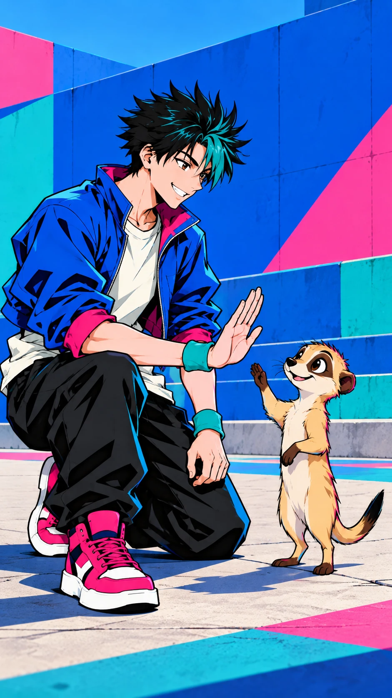
畫面描述｜中文
律單膝低蹲與小拍對望，一手掌心朝上停在狐獴胸前高度，小拍前爪輕靠近但不人手擊掌，兩者開懷笑。
Frame description｜English
Ritsu lowers to one knee facing Pip, one open palm held at the meerkat's chest height; Pip brings a small forepaw near it without a human-hand high-five, both joyful.
Video Caption｜中文
聽見彼此就有了家
Video Caption｜English
When we listen, we belong.
圖像提示詞｜中文｜9:16
9:16直式，單一動畫分鏡，中景。高彩派對流行漫畫，電藍青綠亮粉黑白、銳利輪廓、平塗硬邊陰影、彈性誇張表情。畫面：律單膝低蹲與小拍對望，一手掌心朝上停在狐獴胸前高度，小拍前爪輕靠近但不人手擊掌，兩者開懷笑。角色一致性：青年街舞者律，20歲、172公分、約7頭身，黑色短刺髮有一束青綠瀏海、深棕眼；電藍短外套、奶白T恤、黑色寬褲、亮粉白底球鞋、左右各一條青綠護腕，無帽、無手套、無文字圖案。 狐獴小拍，直立高約40公分、四足肩高12公分，沙棕短毛、兩眼各有深棕眼圈、細長尾巴尖為黑色、短圓耳，無衣服；維持小型狐獴比例，不能變成浣熊或長成半人高。角色設定/character_human.png 與角色設定/character_animal.png 固定造型，角色設定/character_scale.png 固定體型。只載入本鏡頭有出現的角色參考，無角色的物件特寫不加入角色。以本鏡頭指定的衣物與道具階段為準；不把完成後的狀態提早出現。不加文字、字幕、標誌、水印、第三個角色；不畫拼貼、分格或角色轉身表。不改臉型、髮型、衣色、動物花紋與比例；不增加肢體或道具。
Image prompt｜English｜9:16
Vertical 9:16, ONE animation storyboard frame, Medium shot. STYLE: High-saturation pop comic, electric blue teal bright pink strong black-white contrast, sharp dark contours, clean flat fills, two or three hard-edged cel-shadow levels, angular elastic forms, expressive and playful. FRAME: Ritsu lowers to one knee facing Pip, one open palm held at the meerkat's chest height; Pip brings a small forepaw near it without a human-hand high-five, both joyful. CHARACTER LOCK: Ritsu, a 20-year-old male street dancer, 172 cm, seven-head proportions; short spiky black hair with one teal forelock, dark brown eyes. Electric-blue cropped jacket, cream T-shirt, black loose trousers, hot-pink sneakers with white soles, one teal wristband on each wrist, no hat, gloves or lettering. Pip, a meerkat, about 40 cm tall standing upright, shoulder height 12 cm on all fours; sandy short fur, separate dark-brown eye patches, slender tail with black tip, small round ears, no clothing. Natural tiny meerkat proportions, never a raccoon or half-human-height animal. Use character_human.png and character_animal.png for exact designs, character_scale.png for size. Load only the character references visible in this shot; do not add characters to object-only close-ups. The specific shot state takes priority: do not introduce later wardrobe or prop states early. No text, captions, logos, watermarks, extra characters, collage, panels or turnaround. No redesign, scale drift, extra limbs, duplicated props or photographic rendering.
影片提示詞｜中文｜5秒｜9:16
5秒，9:16，以上述分鏡圖為唯一首幀。高彩派對流行漫畫，電藍青綠亮粉黑白、銳利輪廓、平塗硬邊陰影、彈性誇張表情。律單膝低蹲與小拍對望，一手掌心朝上停在狐獴胸前高度，小拍前爪輕靠近但不人手擊掌，兩者開懷笑。動作與運鏡：緩推近，狐獴前爪輕觸掌心一次後停，青年笑，動物不變大。保持原圖角色、體型、場景位置與道具狀態，運動自然且小幅；最後0.5秒穩定收住。不要切鏡、變形、閃爍、憑空新增物件或生成文字；字幕於剪輯時另疊。
Video prompt｜English｜5 seconds｜9:16
5 seconds, vertical 9:16. Use the matching storyboard image as the sole first frame. High-saturation pop comic, electric blue teal bright pink strong black-white contrast, sharp dark contours, clean flat fills, two or three hard-edged cel-shadow levels, angular elastic forms, expressive and playful. Ritsu lowers to one knee facing Pip, one open palm held at the meerkat's chest height; Pip brings a small forepaw near it without a human-hand high-five, both joyful. MOTION AND CAMERA: Slow push-in as one tiny forepaw touches his palm once and holds; he smiles, the animal never enlarges. Preserve the supplied designs, body scale, scene geography and prop state; small natural movement, settle for the final 0.5 second. No cuts, morphing, flicker, invented objects or generated text. Add captions during editing.
兩張海報另設前導與後記。需與全部十張分鏡比對場景、鏡位、姿態、動作及故事時刻，不能用首尾分鏡加字代替。兩張海報只包含相同的四段中英文片名及副標題。片尾採明亮、希望與安定的結局。
時間：00–05 秒。廣場入口外的彩色階梯正面遠景：律坐在階梯上繫亮粉球鞋，電藍外套敞開；小拍站在同一級旁邊觀察，狐獴僅40公分高。背景是大塊電藍青綠幾何牆，沒有廣場地坪圓色塊、舞步或拍手。
海報圖像提示詞｜中文｜9:16
9:16直式獨立片頭前導海報，不能從十張分鏡改字重用。高彩派對流行漫畫，電藍青綠亮粉黑白、銳利輪廓、平塗硬邊陰影、彈性誇張表情。廣場入口外的彩色階梯正面遠景：律坐在階梯上繫亮粉球鞋，電藍外套敞開；小拍站在同一級旁邊觀察，狐獴僅40公分高。背景是大塊電藍青綠幾何牆，沒有廣場地坪圓色塊、舞步或拍手。角色鎖定：青年街舞者律，20歲、172公分、約7頭身，黑色短刺髮有一束青綠瀏海、深棕眼；電藍短外套、奶白T恤、黑色寬褲、亮粉白底球鞋、左右各一條青綠護腕，無帽、無手套、無文字圖案。狐獴小拍，直立高約40公分、四足肩高12公分，沙棕短毛、兩眼各有深棕眼圈、細長尾巴尖為黑色、短圓耳，無衣服；維持小型狐獴比例，不能變成浣熊或長成半人高。嚴格遵守本片四視圖與體型表；服裝、道具的前後狀態以此海報場景為準。上方約30%安排清楚排版、人物臉不被字遮住，四周保留安全邊界。海報只允許四段文字，各出現一次，逐字正確：中文大標題「我們各有節拍」；英文大標題「Our Own Rhythm」；中文副標題「聽見彼此，節拍就有了家」；英文副標題「When we listen, every beat belongs.」。中英文可分行，但不能改字、漏字，不能有其他文字或標誌。
Poster image prompt｜English｜9:16
Vertical 9:16 standalone PROLOGUE opening movie poster, distinct composition and story moment, never a retitled storyboard. High-saturation pop comic, electric blue teal bright pink strong black-white contrast, sharp dark contours, clean flat fills, two or three hard-edged cel-shadow levels, angular elastic forms, expressive and playful. SCENE: Prologue outside the plaza, frontal long shot of colored entrance steps. Ritsu sits tying a hot-pink sneaker, blue jacket open; tiny 40-cm Pip watches beside him on the same step. Broad electric-blue and teal geometric walls, no plaza floor circles, dance step or clap. Exact same character designs and size as supplied sheets. Ritsu, a 20-year-old male street dancer, 172 cm, seven-head proportions; short spiky black hair with one teal forelock, dark brown eyes. Electric-blue cropped jacket, cream T-shirt, black loose trousers, hot-pink sneakers with white soles, one teal wristband on each wrist, no hat, gloves or lettering. Pip, a meerkat, about 40 cm tall standing upright, shoulder height 12 cm on all fours; sandy short fur, separate dark-brown eye patches, slender tail with black tip, small round ears, no clothing. Natural tiny meerkat proportions, never a raccoon or half-human-height animal. The poster's explicitly stated temporal wardrobe and props override generic character timing. Reserve roughly upper 30% for elegant clear typography, safe margins, no text over faces. Render ONLY these FOUR text blocks, exactly once each, accurate Traditional Chinese and English; line breaks allowed, no other letters, symbols, credits or logos: "我們各有節拍" / "Our Own Rhythm" / "聽見彼此，節拍就有了家" / "When we listen, every beat belongs.".
影片提示詞｜中文｜5秒｜9:16
5秒，9:16，以海報/poster_opening.png為唯一首幀，獨立片頭影片。高彩派對流行漫畫，電藍青綠亮粉黑白、銳利輪廓、平塗硬邊陰影、彈性誇張表情。廣場入口外的彩色階梯正面遠景：律坐在階梯上繫亮粉球鞋，電藍外套敞開；小拍站在同一級旁邊觀察，狐獴僅40公分高。背景是大塊電藍青綠幾何牆，沒有廣場地坪圓色塊、舞步或拍手。運鏡與動作：固定正面，青年把鞋帶收好一次、狐獴輕歪頭，沒有舞蹈。四段中英文標題副標題固定在原位置，字形、內容與可讀性全程不變；只讓場景微動，不讓文字隨場景透視變形。保留角色造型比例與原有道具，最後0.5秒穩定。不要切換成任何正片分鏡，不新增文字或角色。若工具無法鎖字，先移除文字製作底片，再於剪輯以相同四段文字固定疊回。
Video prompt｜English｜5 seconds｜9:16
5 seconds, vertical 9:16. Use 海報/poster_opening.png as the only first frame for a separate opening prologue clip. High-saturation pop comic, electric blue teal bright pink strong black-white contrast, sharp dark contours, clean flat fills, two or three hard-edged cel-shadow levels, angular elastic forms, expressive and playful. Prologue outside the plaza, frontal long shot of colored entrance steps. Ritsu sits tying a hot-pink sneaker, blue jacket open; tiny 40-cm Pip watches beside him on the same step. Broad electric-blue and teal geometric walls, no plaza floor circles, dance step or clap. MOTION: Locked frontal view: he finishes the shoelace once and the meerkat tilts its head, no dancing. Lock all four Chinese/English title and subtitle blocks in their original screen positions, with exact glyphs and readability throughout; move only the scene, never warp text with perspective. Preserve character design, size and existing props; settle for the final 0.5 second. No cuts to storyboard shots, extra text or characters. If text cannot be locked, animate a text-free plate and overlay the same four blocks during editing.
時間：55–60 秒。廣場旁圓形噴泉休息區的斜俯拍遠景：律坐在寬水池邊沿，一隻腳放鬆向前，雙手撐在身側；小拍在同一寬邊沿上直立、身高只到坐著青年腰以下。兩者看著水面兩組小漣漪相遇，無跳舞、擊掌或原彩牆，明亮樂觀。
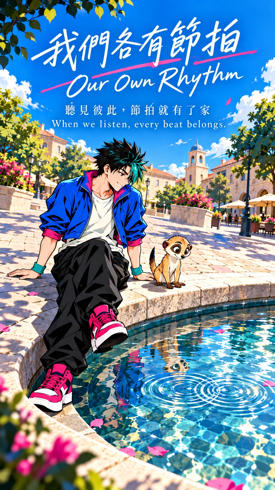
海報圖像提示詞｜中文｜9:16
9:16直式獨立片尾後記海報，不能從十張分鏡改字重用。高彩派對流行漫畫，電藍青綠亮粉黑白、銳利輪廓、平塗硬邊陰影、彈性誇張表情。廣場旁圓形噴泉休息區的斜俯拍遠景：律坐在寬水池邊沿，一隻腳放鬆向前，雙手撐在身側；小拍在同一寬邊沿上直立、身高只到坐著青年腰以下。兩者看著水面兩組小漣漪相遇，無跳舞、擊掌或原彩牆，明亮樂觀。角色鎖定：青年街舞者律，20歲、172公分、約7頭身，黑色短刺髮有一束青綠瀏海、深棕眼；電藍短外套、奶白T恤、黑色寬褲、亮粉白底球鞋、左右各一條青綠護腕，無帽、無手套、無文字圖案。狐獴小拍，直立高約40公分、四足肩高12公分，沙棕短毛、兩眼各有深棕眼圈、細長尾巴尖為黑色、短圓耳，無衣服；維持小型狐獴比例，不能變成浣熊或長成半人高。嚴格遵守本片四視圖與體型表；服裝、道具的前後狀態以此海報場景為準。上方約30%安排清楚排版、人物臉不被字遮住，四周保留安全邊界。海報只允許四段文字，各出現一次，逐字正確：中文大標題「我們各有節拍」；英文大標題「Our Own Rhythm」；中文副標題「聽見彼此，節拍就有了家」；英文副標題「When we listen, every beat belongs.」。中英文可分行，但不能改字、漏字，不能有其他文字或標誌。
Poster image prompt｜English｜9:16
Vertical 9:16 standalone EPILOGUE ending movie poster, distinct composition and story moment, never a retitled storyboard. High-saturation pop comic, electric blue teal bright pink strong black-white contrast, sharp dark contours, clean flat fills, two or three hard-edged cel-shadow levels, angular elastic forms, expressive and playful. SCENE: Epilogue at a circular fountain beside the plaza, oblique high long shot. Ritsu sits on its broad rim, one leg relaxed forward, hands braced beside him; tiny Pip stands on the same broad rim, well below his seated waist. They watch two small ripple rings meet. No dancing, palm touch or original color wall; bright and optimistic. Exact same character designs and size as supplied sheets. Ritsu, a 20-year-old male street dancer, 172 cm, seven-head proportions; short spiky black hair with one teal forelock, dark brown eyes. Electric-blue cropped jacket, cream T-shirt, black loose trousers, hot-pink sneakers with white soles, one teal wristband on each wrist, no hat, gloves or lettering. Pip, a meerkat, about 40 cm tall standing upright, shoulder height 12 cm on all fours; sandy short fur, separate dark-brown eye patches, slender tail with black tip, small round ears, no clothing. Natural tiny meerkat proportions, never a raccoon or half-human-height animal. The poster's explicitly stated temporal wardrobe and props override generic character timing. Reserve roughly upper 30% for elegant clear typography, safe margins, no text over faces. Render ONLY these FOUR text blocks, exactly once each, accurate Traditional Chinese and English; line breaks allowed, no other letters, symbols, credits or logos: "我們各有節拍" / "Our Own Rhythm" / "聽見彼此，節拍就有了家" / "When we listen, every beat belongs.".
影片提示詞｜中文｜5秒｜9:16
5秒，9:16，以海報/poster_ending.png為唯一首幀，獨立片尾影片。高彩派對流行漫畫，電藍青綠亮粉黑白、銳利輪廓、平塗硬邊陰影、彈性誇張表情。廣場旁圓形噴泉休息區的斜俯拍遠景：律坐在寬水池邊沿，一隻腳放鬆向前，雙手撐在身側；小拍在同一寬邊沿上直立、身高只到坐著青年腰以下。兩者看著水面兩組小漣漪相遇，無跳舞、擊掌或原彩牆，明亮樂觀。運鏡與動作：緩慢俯移2%，兩圈水紋相遇，青年輕點腳尖一次，狐獴小尾擺一次。四段中英文標題副標題固定在原位置，字形、內容與可讀性全程不變；只讓場景微動，不讓文字隨場景透視變形。保留角色造型比例與原有道具，最後0.5秒穩定。不要切換成任何正片分鏡，不新增文字或角色。若工具無法鎖字，先移除文字製作底片，再於剪輯以相同四段文字固定疊回。
Video prompt｜English｜5 seconds｜9:16
5 seconds, vertical 9:16. Use 海報/poster_ending.png as the only first frame for a separate ending epilogue clip. High-saturation pop comic, electric blue teal bright pink strong black-white contrast, sharp dark contours, clean flat fills, two or three hard-edged cel-shadow levels, angular elastic forms, expressive and playful. Epilogue at a circular fountain beside the plaza, oblique high long shot. Ritsu sits on its broad rim, one leg relaxed forward, hands braced beside him; tiny Pip stands on the same broad rim, well below his seated waist. They watch two small ripple rings meet. No dancing, palm touch or original color wall; bright and optimistic. MOTION: Slow 2% downward drift; two ripple rings meet, man taps one toe once, meerkat flicks its tail once. Lock all four Chinese/English title and subtitle blocks in their original screen positions, with exact glyphs and readability throughout; move only the scene, never warp text with perspective. Preserve character design, size and existing props; settle for the final 0.5 second. No cuts to storyboard shots, extra text or characters. If text cannot be locked, animate a text-free plate and overlay the same four blocks during editing.
中文｜16:9
16:9橫式，白色背景、均勻光線，獨立角色設定表；同一角色四個全身視角依序為正面、45度、正側面、背面，大小相同、基線一致，不裁切頭腳。青年街舞者律，20歲、172公分、約7頭身，黑色短刺髮有一束青綠瀏海、深棕眼；電藍短外套、奶白T恤、黑色寬褲、亮粉白底球鞋、左右各一條青綠護腕，無帽、無手套、無文字圖案。高彩派對流行漫畫，電藍青綠亮粉黑白、銳利輪廓、平塗硬邊陰影、彈性誇張表情。只參考原圖風格，不複製原圖角色與構圖；不加文字、標籤或其他角色。
English｜16:9
16:9 landscape character turnaround, pure white background, even neutral light. Four full-body views in order: front, 45-degree three-quarter, strict side, back, consistent size and baseline, complete heads and feet. Ritsu, a 20-year-old male street dancer, 172 cm, seven-head proportions; short spiky black hair with one teal forelock, dark brown eyes. Electric-blue cropped jacket, cream T-shirt, black loose trousers, hot-pink sneakers with white soles, one teal wristband on each wrist, no hat, gloves or lettering. High-saturation pop comic, electric blue teal bright pink strong black-white contrast, sharp dark contours, clean flat fills, two or three hard-edged cel-shadow levels, angular elastic forms, expressive and playful. Input artwork is style only, not a character or composition to copy. No text, labels or additional characters.
中文｜16:9
16:9橫式，白色背景、均勻光線，獨立角色設定表；同一角色四個全身視角依序為正面、45度、正側面、背面，大小相同、基線一致，不裁切頭腳。狐獴小拍，直立高約40公分、四足肩高12公分，沙棕短毛、兩眼各有深棕眼圈、細長尾巴尖為黑色、短圓耳，無衣服；維持小型狐獴比例，不能變成浣熊或長成半人高。高彩派對流行漫畫，電藍青綠亮粉黑白、銳利輪廓、平塗硬邊陰影、彈性誇張表情。只參考原圖風格，不複製原圖角色與構圖；不加文字、標籤或其他角色。
English｜16:9
16:9 landscape character turnaround, pure white background, even neutral light. Four full-body views in order: front, 45-degree three-quarter, strict side, back, consistent size and baseline, complete heads and feet. Pip, a meerkat, about 40 cm tall standing upright, shoulder height 12 cm on all fours; sandy short fur, separate dark-brown eye patches, slender tail with black tip, small round ears, no clothing. Natural tiny meerkat proportions, never a raccoon or half-human-height animal. High-saturation pop comic, electric blue teal bright pink strong black-white contrast, sharp dark contours, clean flat fills, two or three hard-edged cel-shadow levels, angular elastic forms, expressive and playful. Input artwork is style only, not a character or composition to copy. No text, labels or additional characters.
中文｜16:9
16:9，純白背景、均勻光線，同一基線、同一空間尺度，只畫一個全身律與一隻全身小拍並列。青年街舞者律，20歲、172公分、約7頭身，黑色短刺髮有一束青綠瀏海、深棕眼；電藍短外套、奶白T恤、黑色寬褲、亮粉白底球鞋、左右各一條青綠護腕，無帽、無手套、無文字圖案。狐獴小拍，直立高約40公分、四足肩高12公分，沙棕短毛、兩眼各有深棕眼圈、細長尾巴尖為黑色、短圓耳，無衣服；維持小型狐獴比例，不能變成浣熊或長成半人高。造型依兩張角色四視圖；不為填滿版面放大動物。錦鯉另用無景物的透明淺水帶顯示水中姿態；其餘動物腳踏地。不加文字或網格。
English｜16:9
16:9 pure white shared size sheet, even light. One full-body 律 and one 小拍, same spatial scale and common baseline. Ritsu, a 20-year-old male street dancer, 172 cm, seven-head proportions; short spiky black hair with one teal forelock, dark brown eyes. Electric-blue cropped jacket, cream T-shirt, black loose trousers, hot-pink sneakers with white soles, one teal wristband on each wrist, no hat, gloves or lettering. Pip, a meerkat, about 40 cm tall standing upright, shoulder height 12 cm on all fours; sandy short fur, separate dark-brown eye patches, slender tail with black tip, small round ears, no clothing. Natural tiny meerkat proportions, never a raccoon or half-human-height animal. Match individual turnarounds, never enlarge animal to fill page. Koi only: submerged horizontally in a transparent pale water band with no scenery; all other animals grounded. No lettering or grid.
實際送出圖像工具的提示詞與參考來源另存於 ../04至10製作資料/生成記錄/；本規格提供可獨立複用的中英文提示詞。